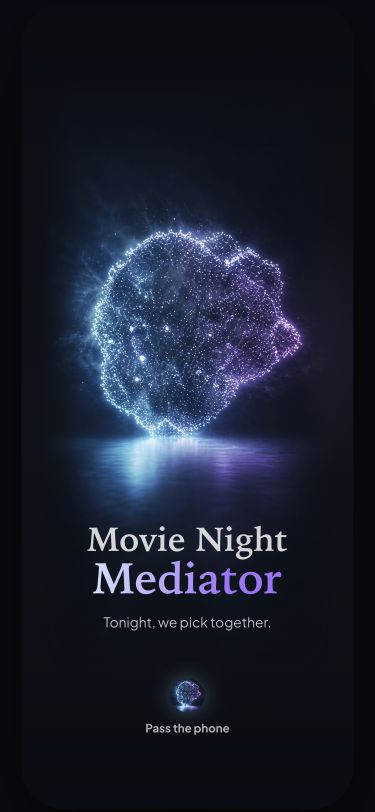
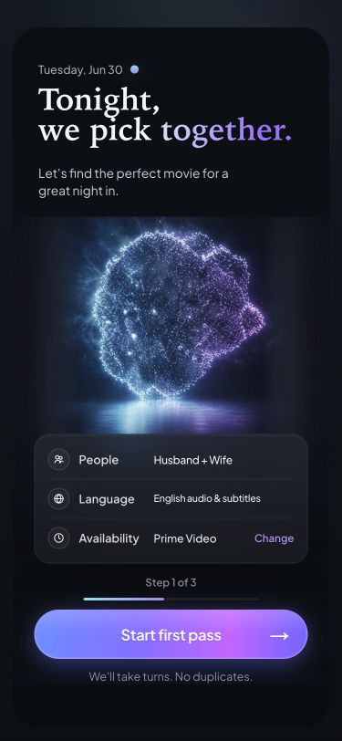
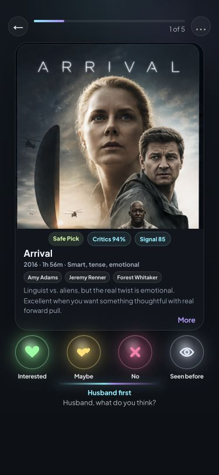
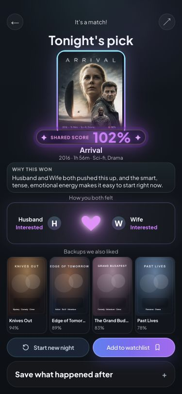

Launch
First frame
- Replaces the old TV reference image with the particle identity.
- Uses product name and pass-the-phone cue without extra instructions.
Alternate design experiment
This review surface covers the four requested mobile screens in the new worktree direction. The approved frozen design remains recoverable at commit ab5568f.



